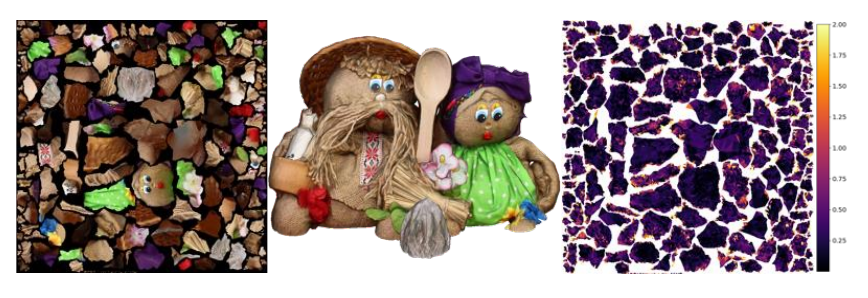
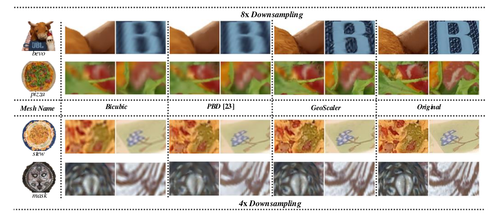
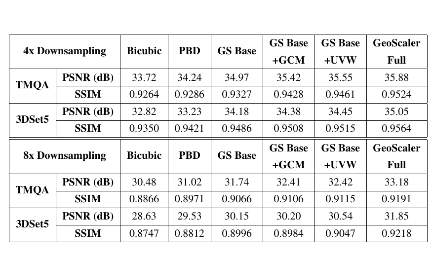

High-resolution texture maps are necessary to accurately represent real-world objects with 3D meshes. The large sizes of textures can bottleneck the real-time rendering of high-quality virtual 3D scenes on devices that have low computational budgets and limited memory. Downsampling the texture maps directly addresses the issue, albeit at the cost of visual fidelity. Traditionally, downsampling of texture maps is performed using methods such as bicubic interpolation and the Lanczos algorithm. These methods ignore the geometric layout of the mesh and its UV parameterization and also do not account for the rendering process used to obtain the final visualization that the users will experience. Towards filling these gaps, we introduce GeoScaler, which is a method of downsampling texture maps of 3D meshes while incorporating geometric cues and maximizing the visual fidelity of the rendered views of the textured meshes. We show that the textures generated by GeoScaler deliver significantly better quality rendered images compared to those generated by traditional downsampling methods.
High-resolution textures make 3D objects look real but are too heavy for real-time rendering on headsets and phones, so developers shrink them with standard image resizing such as bicubic or Lanczos. Those methods treat a texture as a flat photo. They blur across the seams where the texture is cut apart, ignore that some regions are stretched or squeezed when wrapped onto the 3D surface, and optimize the texture's pixels rather than what the viewer actually sees. GeoScaler downsamples with the mesh's geometry in mind and directly optimizes the quality of rendered views.



@inproceedings{pentapati2025geoscaler,
title = {GeoScaler: Geometry and Rendering-Aware Downsampling of 3D Mesh Textures},
author = {Pentapati, Sai Karthikey and Rai, Anshul and Ten, Arkady and Atluru, Chaitanya and Bovik, Alan C.},
booktitle = {IEEE International Conference on Image Processing (ICIP)},
year = {2025}
}